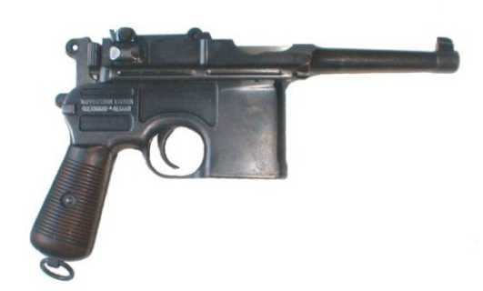
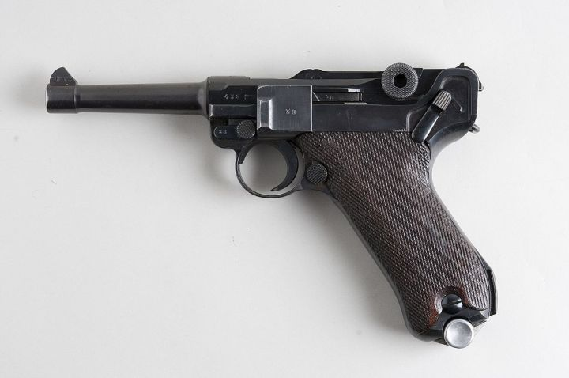
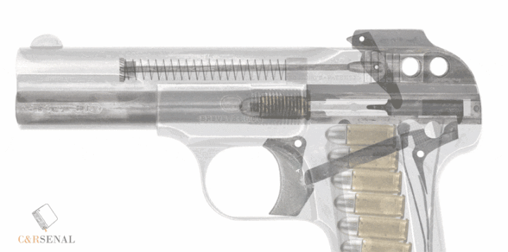
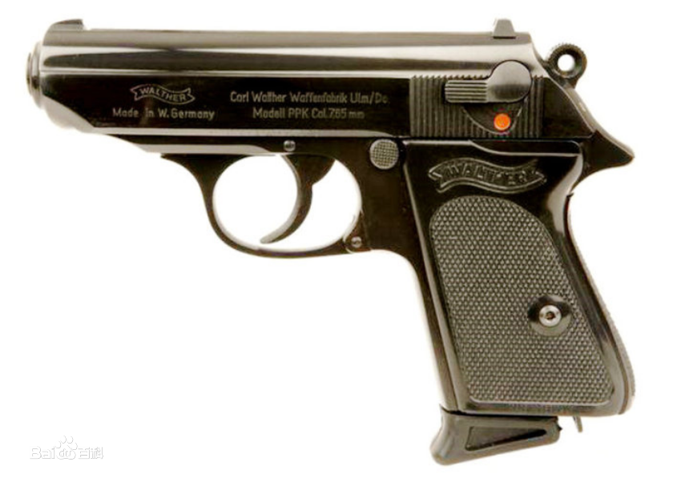
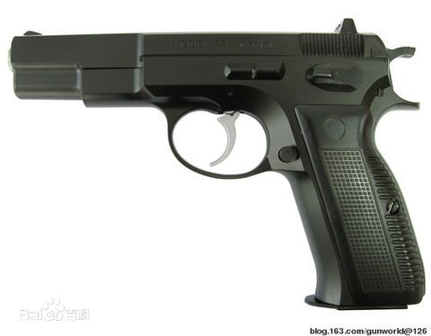
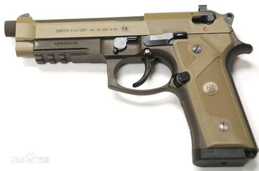
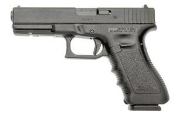
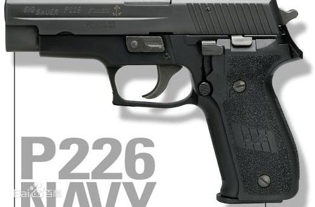

远古手枪
柯尔特左轮
左轮手枪是美国人塞缨尔柯尔特于1835年发明的，他在发明转轮手枪后，一方面不断改进，从1847年至1860年间，他共改进与推出12种转轮手枪。由于左轮手枪结构简单，操作灵活，很快受到各国官兵的喜爱，19世纪中期以后，这种枪更是风靡全球。

自动手枪出现后，左轮手枪的一些弱点很快暴露出来，左轮手枪容弹量少，枪管与转轮之间有间隙，会漏气和冒烟，初速低，重新装填时间长，威力较小。所以，作为军队的正式装备，左轮手枪逐渐被自动手枪所代替。
但是，由于该枪有一个特殊优点——可靠，特别是对瞎火弹的处理既可靠又简捷，所以，美国和西方一些国家的警察对左轮手枪情有独钟，美国警察中90%的人爱用左轮手枪。
罗副机长喜欢的四星柯尔特左轮是Colt SAA（一种单动式左轮手枪），在西部片中极为闻名。

纳甘左轮（纳甘M1895）
1895年比利时工业家莱昂·纳甘为俄罗斯研发的7发双动式左轮。相比于其他左轮手枪，纳甘左轮有特殊的气体密封式设计，增加了子弹的初速，并容许武器被抑制。
纳甘左轮被俄罗斯陆军广泛使用，也被苏联所采用。

早期手枪
最早的自动手枪主要是德国和奥匈帝国设计出来的。
毛瑟C96
毛瑟C96手枪（Broomhandle Mauser / Mauser C96），又称驳壳枪，是一种由毛瑟在1896年推出的半自动手枪，因其枪套是一个木制的盒子，所以在中国称为“20响”、“盒子炮”或“匣子枪”。

改进自博查特C93半自动手枪，利用短后坐原理提高了枪弹速度，但也导致大量火药在枪口爆燃，枪口上跳问题以及体积过大、使用起来笨重的问题。
毛瑟C96不如鲁格P08小巧，因而德德国军方仅仅象征性订购了15w支作为补充。但是C96被大量出口中国，1931年进行升级使其可以连发并配备20发长弹夹。
共生产了100w毛瑟C96，其中70%销往中国。
不过罗副机长眼里C96应该是这样的

鲁格P08
鲁格P08是博尔夏特手枪的改进型，1900年开始投入生产。鲁格P08于1908年被选为德军制式手枪并命名为Parabellum08，在德军服役30年之久。

鲁格P08采用枪管短后坐式工作原理，其最大的特色是它的肘节式闭锁机。
鲁格P08手枪生产工艺要求极高，构造复杂，零部件较多，成本也高，由于不适合战争时期大量配备，在1938年被德国卡尔·瓦尔特武器制造厂生产的P38手枪取代。到1942年停止生产为止，德军制造了205万支鲁格P08。
不过罗副机长眼里P08应该是这样的

斯太尔M1912
奥地利斯太尔M1912半自动手枪属早期自动装填手枪，设计师是捷克的伽列·科恩卡，曾参与莫辛纳甘的设计。

斯太尔M1912改进自罗恩-斯塔尔M1907,在1912年装备奥匈帝国军队。
斯太尔1912是在一战和二战中被装备使用的一代名枪。不过，该枪采用的弹药和供弹具非主流产品，因此在二战后便沉寂了。
可惜了，罗副机长那里没有斯太尔M1912。
FN M1900
美国的枪械设计师约翰·勃朗宁设计，由比利时国营赫斯塔尔公司大规模生产，又称FN勃朗宁M1900。

M1900是第一支有套筒的自动手枪，但是其套筒结构和后来的自动手枪有所区别，其复进簧在上，枪管在下。击发系统采用针式击发原理，结构比较简单，没有外露的击锤。
1909年刺杀日本首相伊藤博文、1918年刺杀列宁的都是M1900，萨拉热窝事件中使用的是M1910。
柯尔特M1911
也是美国人约翰·勃朗宁设计的.45 ACP口径的半自动手枪。M1911称为美军制式手枪达74年（1911-1985），后被M9取代。M1911及其1924的改进型M1911A1共生产了约270w，可能是累计产量最多的自动手枪。最明显的特征是套筒座后部伸出一个较大的角状突起。

M1911采用了0.45ACP子弹，口径有11.43MM，初速只有246m/s，但是拥有极高的人体抑止力。
相比M1911，M1911A1主要的改进有
- 加宽准星（帕特里奇瞄具）
- 加长击锤，使之容易被拇指扳动
- 缩短叩击距离，增加防滑纹
毕竟世界名枪…了解一下原理
Colt M1911是罗副机长的第一把枪，不过大概被看成大写的狗粮了吧

1980年代佩里·阿内特设计了灰熊温彻斯特马格努姆手枪，其实只是柯尔特M1911的特别加大型。
PPK
德国卡尔·瓦尔特兵工厂1929年推出警用手枪（Polizei Pistole）PP手枪，1931年推出刑警用手枪（Polizei Pistole Kriminal）PPK手枪，PPK手枪比PP手枪短18mm。这两种手枪是二次大战前最先进的手枪，纳粹曾大量秘密配发，希特勒1945年也用PPK自尽，PPK也是007的代名词。

PPK采用7.65mm/.32LR口径，初速280m/s，弹夹容量7发。PPK对无防护目标杀伤力巨大，但是穿透力不足。
下面是六星战神PPK，即使没有任何装备闪避值也达到了极高的100点，本身的光环又让她极为适合站在前排作为一个闪T，两者在一起，得到的自然而然的就是优秀的实用性双倍的喜悦。
托卡列夫
苏联装备的第一种半自动手枪，由费多尔·瓦西里耶维奇·托卡列夫设计，由图拉兵工厂生产，简称为TT手枪（也称为TT-33），用以取代纳甘左轮。
1930年托卡列夫以柯尔特M1911为蓝本进行改进，采用7.62mm口径，称为TT-30，后进一步改进的版本称为TT-33，两者都称为托卡列夫手枪。
战争初期的惨败导致生产能力不足，苏联转而用纳甘左轮弥补TT手枪数量不足。知道五十年代马卡洛夫PM手枪诞生后，TT-33于1952年正式停产。
但是托卡列夫优秀的穿透力和连续精确射击的能力、低廉的成本得到各国认可，匈牙利仿制为48M，波兰版本为wz.33，中国仿制为51式手枪（后来改进为54式）。
马卡洛夫PM
1945年马卡列夫设计了PM手枪，1951年开始服役军队。
PM手枪的结构和德国沃尔特PP近似，但是也有很多鲜明特点，如零件总数少、尽可能一物多用。马卡洛夫手枪采用简单的自由后坐式工作原理，结构简单，性能可靠，成本低廉。
马卡洛夫的明显缺点是停止作用小和杀伤力低。

59式手枪是马卡洛夫PM手枪的仿制品。
1990年代后期研制的MP-448 Skyph手枪是马卡洛夫手枪的最新改进型，主要用于出口。
维尔德Mk II
维尔德Mk II是二战中研发的一款带有极强神秘色彩的微声手枪。
该枪作为战时研制出的微声武器，在外形方面突出了简单、实用、便于携带的特点。

现代手枪
PSM
PSM是应克格勃要求，由中央精密机械工程研究院1972年设计的紧凑型半自动手枪。
PSM的优点是尺寸非常小，枪身很薄，只有17毫米厚。但作为自卫武器则被批评为很不实用，停止作用和杀伤效果还是太低。在1990年代，PSM手枪倒是一度成为犯罪分子的喜爱，因为这种手枪容易隐藏且又能在近距离穿透警察穿着的软质防弹衣。
PSM手枪采用自由后坐式原理，枪管固定，套筒和底把均为钢结构。扳机为单/双动式，有一个外露击锤和一个滑动式的手动保险，手动保险柄可以解脱击锤的待击状态。

VP 70
VP是德文“Volks Pistole”的缩写，意思是“人民手枪”；70是指正式公开的年份1970年，不过正式推出市场是在1973年。
由于VP70的自动方式为枪机自由后座，靠套筒的惯性和复进簧力来控制套筒的后座运动，加上套筒后坐行程短，当全自动发射时理论射速可达到每分钟2,200发，不易控制且子弹消耗快，所以采用3发点射的方式来控制射速和提高精确度。

P7
Heckler & Koch P7是德国黑克勒-科赫所生产的一种半自动手枪，该枪设计独特，采用了气体延迟反冲原理和独特的握把保险装置。
黑克勒-科赫在1971年所开发的HK4型手枪基础之上，重新设计了一种将握把保险装置移动到前部的手枪，并将其命名为PSP手枪，后来改名P7。
P7折叠了许多配件也大幅缩短了全枪的长度，因此对于便衣警察特别适用。

CZ75
捷克的国营切斯卡·兹布罗约夫卡公司1975年生产的手枪。
本身没有什么特别出众的特殊的设计，但却是集多种手枪的优点于一身，手感舒适、性能可靠、精度良好，而且其造工独特，价格也不高。

CZ 75被广泛仿制，包括意大利Tanfoglio系列、美国春田P9、中国NZ75，美国Bren Ten、英国的Splitfire等
沙漠之鹰
1980年由美国武器研究公司MRI发布、以色列军事工业公司定型的狩猎手枪。
沙漠之鹰威力极大，射程在100米以上。最初是.357口径，后又发布.44口径。
但是没有被作为军用手枪来列装，主要原因是空枪重达2kg，而且后坐力很大，结构复杂，难以适应恶劣的战场环境。当然，这不妨碍它在众多影片中出现。

M9（伯莱塔92F）
1985年由意大利伯莱塔公司研制的伯莱塔92F型手枪力压群雄，被美军选为新一代制式军用手枪、并在美军中重新命名为M9手枪，取代了M1911装备美军。M9的主要外形特点是口部外露一段枪管，而且套筒上方有一个很长的开孔，枪管几乎全部显露在外。M9和92F的主要区别是扳机护圈前部不光滑。

M9手枪采用枪管短行程后座作用原理、闭锁方式为卡铁下沉式，单/双动扳机设计，以15发可拆式弹匣供弹，枪长217mm，重1.1kg(包括装弹弹夹），弹头初速390米/秒。
主要优点有体积小、重量轻、可靠性好等。双排弹匣容量大，但是压满子弹会导致弹力变弱。
美军在数十次战争中使用M9手枪，包括科索沃、波斯尼亚、索马里、海地、波斯湾、巴拿马等等，历经这些战争后，伯莱塔M9倍受赞誉。

92式手枪是中国北方工业公司设计的半自动手枪。其研发约在1994年开始，92式的机械结构吸收了贝瑞塔92F／FS的设计，而在外型上则与HK USP相似。

格洛克17
1983年奥地利格洛克公司应奥地利陆军的要求研制的。现今发展出4种口径、8种型号，被40多个国家军队和警察装备。

格洛克17正常装弹量是17发。
格洛克17及其衍生型都以其可靠性著称。因为坚固耐用和简单化的设计，它们能在一些极端的环境下正常工作，并且能使用相当多种类的子弹，更可改装成冲锋枪。它的零件也不多，因此维修相当方便，也因为后坐力小而增加人气。
下面虽然是三星，不过颇为稀有
SIG P226
P226原本是瑞士/德国SIG公司为1980年代初期参与美国XM9手枪竞争计划而设计的，后来成为伯莱塔92F外唯一通过测试的手枪，但由于价格问题而被挤出局。2010年初美军正式列装，更名为MK25。
P226使用的SIG闭锁系统改进自由勃朗宁研制的闭锁系统，并被众多枪械制造商所仿制。

另外1988年SIG公司为了加入大口径弹药市场，在P228基础上研发了P229型手枪。P229常被当做P226的便携版。

Mk 23
1990年，美国特种作战司令部应要求研发一款0.45英寸口径的自动手枪。Mk23由枪械设计师海穆特·威尔多设计，黑克勒-科赫生产的一款半自动手枪。
Mk23是第一把被设定为“进攻型”的手枪，但是作战人员对它并不感兴趣，主要原因是它太大了，而且整个系统太昂贵。

由于Mk23标准太高，因此在1992-1993年推出了轻量化版本USP。USP使用了传统的勃朗宁闭锁式枪机，并被设计成单双动式。
1994年推出缩小版的USP，USP Compact

雅丽金PYa（MP443）
雅丽金手枪，也成为了MP443“乌鸦”手枪，于1993年由俄罗斯国内最大的手机生产商伊热夫斯克兵工厂研制。雅丽金的设计借鉴了运动手枪的结构复杂的弹夹卡笋。外形与SIG P226有相似之处。

雅丽金PYa被俄罗斯军队正式采用，但由于资金问题，只少量装备了特种部队。
另外，PYa有民用版本MP446“海盗”。不过罗副机长那儿只有二星…
瓦尔特 P99
瓦尔特公司在1988年推出了P88 9mm手枪，但可惜流行不起来。在1994年，瓦尔特公司以P88为基础重新设计一种适合平民自卫或执法人员使用的半自动手枪，并吸收了市场上许多新产品的研究成果。瓦尔特的新手枪在1996年对外公开，并命名为P99自动手枪。
P99采用枪管短后坐原理，其设计是仿照数十年前SIG Sauer P220手枪上的改进的勃朗宁式闭锁机构，通过底把内一块闭锁卡铁与枪管尾部下方的一个斜槽作用使枪管上下摆动而实现开锁和闭锁。
P99标准型的击发机构为单/双动式，第一发为双动，扳机扣力为4kg，后续的都为单动，扳机扣力为2kg。

特殊手枪
SPP-1水枪
一般子弹在水中威力很小，为了在与敌方战斗蛙人对阵时有更大的战术优势，前苏联海军在1960年代后期要求中央精密机械研究所研制专门的水下手枪，该枪被命名为SPP-1，是“特种水下手枪”的缩写（Spetsialnyj Podvodnyj Pistolet）。
该枪于1971年开始装备前苏联海军的战斗蛙人部队。后来SPP-1经过改进，重新定型为SPP-1M，目前SPP-1M仍然被俄罗斯海军特种部队所装备，并通过俄罗斯政府控制的军事销售组织出口到其他国家。
SPP-1水下手枪使用专门的SPS水下弹药，发射一种又长又细的箭形弹头。使用40mm长的突缘瓶颈形水密弹壳，弹头由低碳钢制成，弹径4.5mm，长115mm，重12.8g。全弹长145mm，重17.5g。这种箭形弹的弹尖顶端是平的，它通过滑膛枪管发射，依靠流体力学效应来稳定，而由于发射药的爆发力比压缩空气强，因此SPP-1水下手枪在水底下的有效射程和穿透力比以往潜水员用的梭镖更强。在其有效射程内可轻易地穿透保暖潜水衣或5mm厚的塑料面罩后对潜水员造成严重创伤。
不过这种箭形弹在空气中飞行不太稳定，因此在水面上使用时有效射程很有限，通常只能应急时使用。